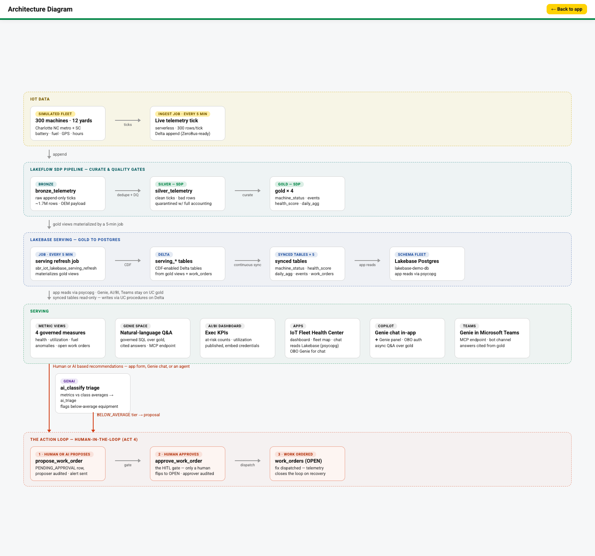

Signal to Action · equipment-rental IoT fleet-health proof of concept
Migrating your IoT Platform to Databricks
Catch failing equipment before your renters do — at a cost that doesn’t scale with your fleet.
FE Bar submission · Demo data is a synthetic 300-machine fleet · Figures are measured from Databricks system tables unless labeled illustrative
1
The customer problem
Every new machine adds cost on the legacy stack, and renters find the failures first
Telemetry from every machine (battery, fuel, GPS, hours) lands on an in-house platform: ingestion pipelines, streaming infrastructure, a message bus and serving replicas.
Each of those layers scales linearly with fleet size, and every new machine class adds another pipeline to build, run and monitor.
Insight stays buried in raw telemetry; yard managers and analysts cannot ask questions without an engineering queue.
Maintenance is reactive: the renter discovers the failed unit before the rental company does.
Qualitative pattern for an equipment-rental fleet on an in-place stack. Not a measured customer figure.
2
The cost problem
On an in-place stack, cost follows the fleet. On Databricks, it follows the data.
Per-device connection and pipeline costs grow with every machine.
Clusters are sized for peak fleet load and run 24/7.
Serving infrastructure is duplicated per application.
Ops headcount rises with each new equipment class.
Databricks: ingest, process and serve run on serverless pipelines and Lakebase, so cost is driven by data volume, not device count.
Illustrative model Total platform cost index. Legacy cost per machine assumed flat, so total is linear. Databricks assumes 50% fixed per-run overhead and 50% volume-driven. Not customer actuals.
Legacy in-place (illustrative)
Databricks (illustrative)
Cost driver
Device count, peak-sized clusters, headcount
Data volume and serverless compute per run
Cost per machine / month
Roughly flat, so total grows ~linearly
Falls as the fleet grows
3
Measured proof point
The demo runs 300 machines, every 5 minutes, for about $103 a day at list price
Component (Databricks job or pipeline)
Runs (14 full days)
Succeeded
Avg run time
List cost / day
Live telemetry ingest job 350422921403193
4,034
4,032
0.6 min
$20.20
Lakebase serving refresh job 882651434551167
4,033
4,032
0.5 min
$22.31
SDP refresh (bronze to silver to gold) job 1039479508136923
4,032
4,032
2.6 min (p95 3.2)
$60.97
Total, three components
$103.48
Measured
$10.49 per machine per month = $103.48/day × 30.4 days ÷ 300 machines (list price).
Derived
Two-job subtotal (ingest + serving refresh): $42.51/day. Excludes discounts, the Apps, SQL and Genie usage on the shared workspace, which cannot be isolated to this demo.
Source: query on fevm-azure, 2026-10-30. system.billing.usage (usage_metadata.job_id; usage_metadata.dlt_pipeline_id = b02360cc-15d8-4342-bc81-60c8570c26b2) joined to system.billing.list_prices on sku and price window; runs from system.lakeflow.job_run_timeline. Window 2026-10-16 to 2026-10-29 (14 complete days). List prices before any negotiated discount.
4
Scale projection
At 10x the fleet: about $31k a month in the worst case, about $17k in the illustrative sub-linear model
Scenario
Machines
Monthly cost (list)
Per machine / month
Basis
Demo, as measured
300
$3,146
$10.49
Measured
10x fleet, cost scales linearly (worst case)
3,000
$31,456
$10.49
Projection
10x fleet, sub-linear (5.5x multiple)
3,000
$17,301
$5.77
Illustrative model
Assumptions (not measured at 3,000 machines):
Monthly = daily cost × 30.4. Worst case keeps the measured $/machine. Illustrative sub-linear case assumes 50% of cost is fixed per-run overhead (scheduling, start-up) and 50% scales with telemetry volume, giving 0.5 + 0.5 × 10 = 5.5x. Run times at 10x are not measured and need a pilot check against the 5-minute cadence. Excludes the Apps, Lakebase and GenAI costs and any legacy comparison, which depend on the customer’s actual bill.
5
Architecture
One governed platform carries the journey from telemetry to work order

1 · Lakeflow ingest
Serverless ingest job every 5 min; SDP with DQ guardrails quarantines bad rows
2 · Unity Catalog governance
Catalog, HITL procedures, metric views and grants on one platform
3 · Lakebase serving
Continuous synced tables; the app reads operational data from Postgres
4 · GenAI
ai_classify tiers all 300 machines vs class average; Genie answers over gold
5 · Fleet Copilot app
Human-in-the-loop: AI or people propose, a human approves
6
What makes it intelligent
AI finds and proposes. Governed data answers. A person decides.
Genie space over governed gold data: natural-language answers with certified answers and cited sources, so yard managers query without SQL.
Genie work-order tool (create_work_order): Genie can propose a work order, which lands as pending approval, never as open.
AI-functions triage (ai_classify): all 300 machines classified against their class average. 153 below average (51%), 74 at average (25%), 72 above (24%), 1 with no data.
AI proposes; a human approves. The model never opens a work order on its own.
Measured Source: sbr_iot_demo.fleet.ai_triage, performance_tier, query on fevm-azure, 2026-10-30. The no-data unit is from job run 666542468716283.
7
The human-in-the-loop loop
Every work order passes a human gate before anyone dispatches a truck
1 · Propose
AI or a person
From a telemetry alert, a triage flag or a Genie question, via the propose_work_order procedure. Row lands as PENDING_APPROVAL; proposer is audited.
2 · Pending
Waiting on a human
Shown in the Copilot queue. The unit leaves the at-risk list while an active order exists, so no duplicate orders.
3 · Approve
Only a human
Approving flips the order to OPEN. The approver is audited; the AI cannot take this step.
4 · Dispatch
Fix, then verify
The fix is dispatched. Telemetry shows recovery, which closes the loop.
Demo beat: pick an at-risk unit on the map, ask Genie which units need service this week, propose a work order, approve it, and watch the status flip to OPEN.
8
Buyer KPIs
What we measured on the demo, and what a pilot must prove
Measured
48.3%
Fleet utilization, 7-day average
gold_daily_agg, 2026-10-24 to 10-30, machine-weighted across 4 classes (synthetic demo fleet). Query on fevm-azure.
Measured
$10.49
Cost per machine per month (list price)
system.billing.usage x list_prices, 14 full days, 300 machines. See measured proof point.
Derived
< 10 min
Telemetry to app (time-to-insight)
5-min cadence plus measured run times of 0.6, 0.5 and 2.6 min. Not timed end to end; confirm in pilot.
Illustrative target
−10% target
Machine downtime avoided
Not measured. Set the baseline with the customer in the pilot; the number above is a placeholder.
Utilization and cost come from query results on fevm-azure (2026-10-30). Fleet data is synthetic demo data, so these are demo values, not customer actuals.
9
Value framing
For the executive sponsor: lower TCO. For the domain owner: less babysitting.
Executive sponsor
Lower TCO: one platform in place of separate ingest, streaming, serving and ops stacks (illustrative; confirm the customer’s current stack count).
Cost follows data volume, not device count or headcount.
Governed from day one with Unity Catalog grants and audit.
Domain owner (fleet operations)
No pipeline babysitting: DQ guardrails quarantine bad rows with full accounting.
Governed metrics: one definition of utilization, health and anomalies.
Natural-language access for the yard team through Genie, with no SQL queue.
10
Demo and next steps
Try it live, then start a 30-day pilot on your own fleet data
Live demo, in this order
Fleet map: risk-colored markers; click an at-risk unit.
Genie chat: ask a natural-language question and check the cited answer.
Propose, then approve: create a work order, approve it, and watch it go OPEN.
30-day pilot (proposed)
Week 1: connect a telemetry sample; agree on KPIs and baselines.
Week 2: ingest with DQ guardrails; governed metrics in Unity Catalog.
Week 3: Copilot app and Genie for the yard team; propose and approve on real alerts.
Week 4: measure utilization, downtime and cost per machine against baseline; decide on scale-out.